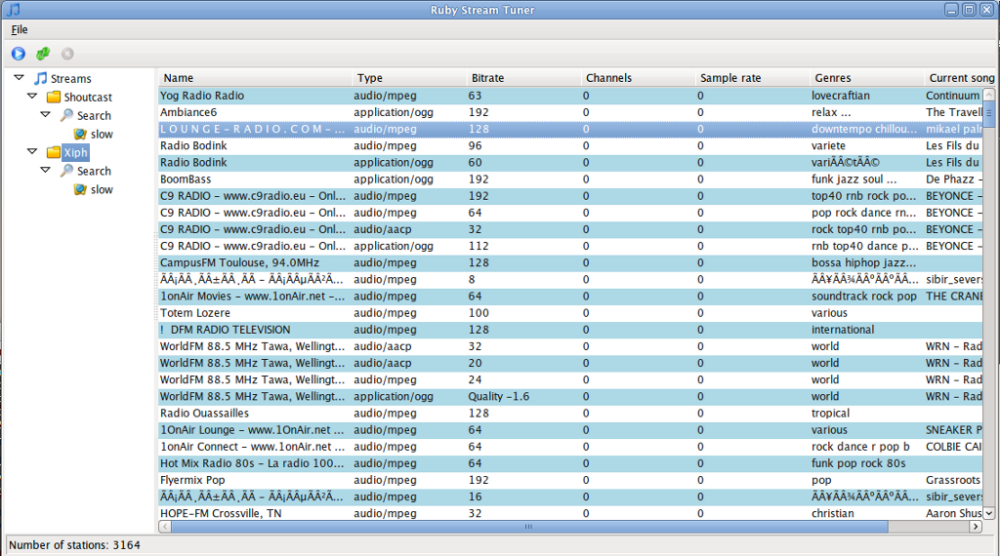
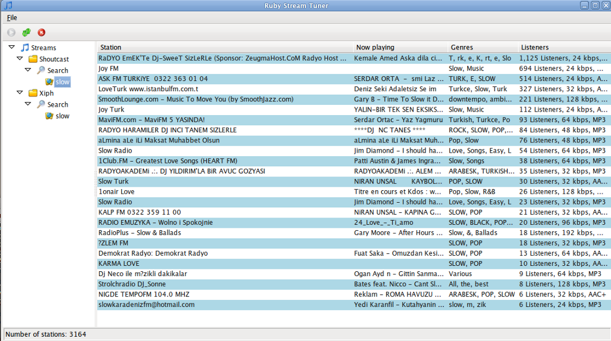
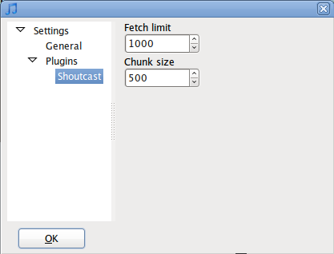
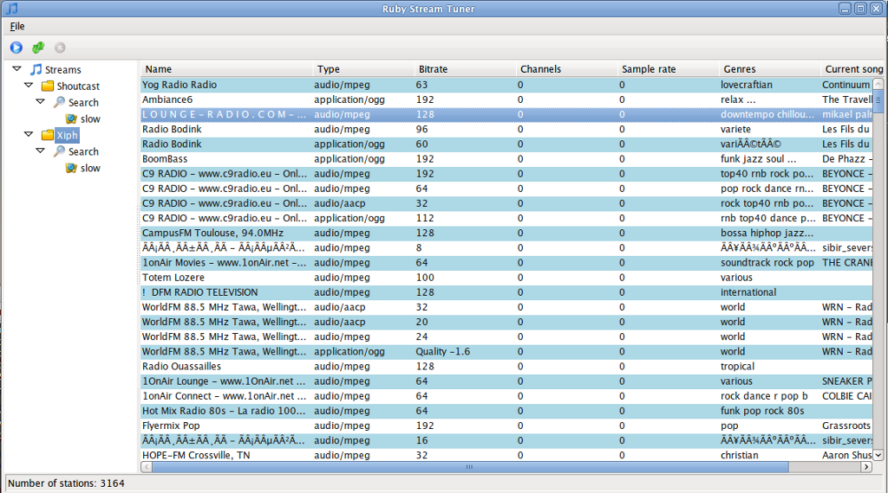
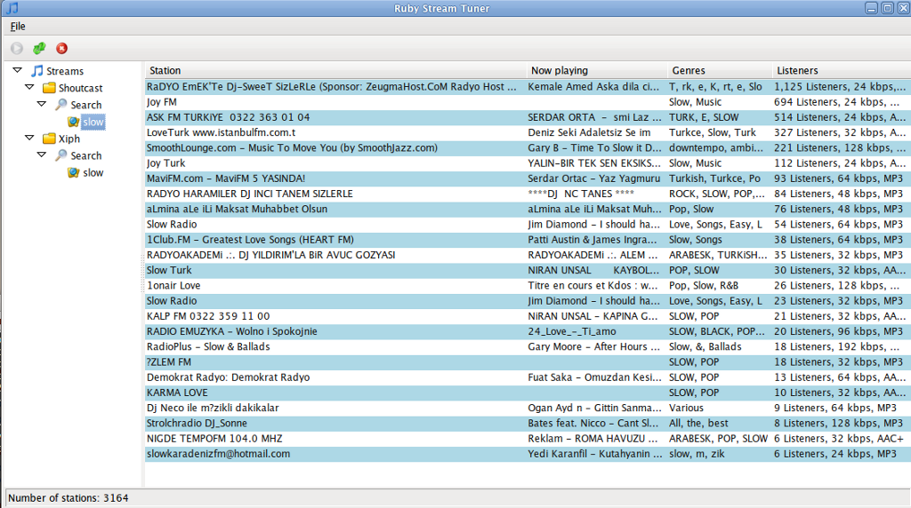
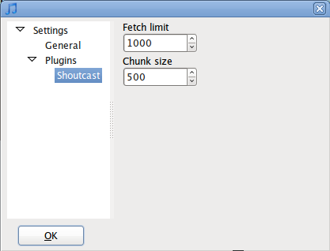

RStreamTuner in action
Friend of mine criticised me why I didn’t put some screenshots on project page. Since I couldn’t find a way to do it there I’ve decided to put some screenshots here, so here they are.
  
Friend of mine criticised me why I didn’t put some screenshots on project page. Since I couldn’t find a way to do it there I’ve decided to put some screenshots here, so here they are.
  